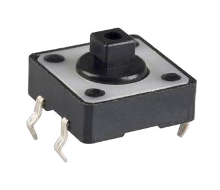
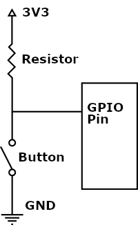
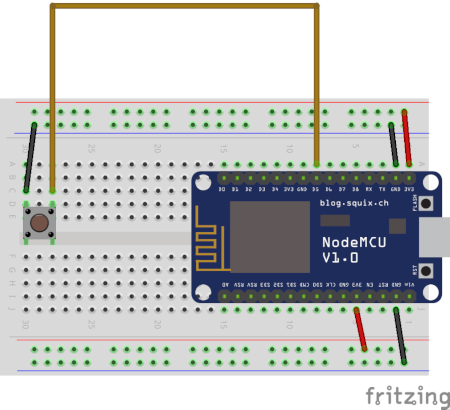
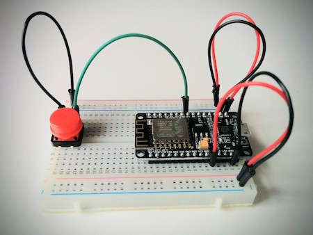

MicroPython and the Internet of Things, Part III: Building a MicroPython Application
Posted by
on underIn this chapter you are going to learn how to write standalone MicroPython applications and upload them to your microcontroller board.
If you want to see me and hear me explain everything in this tutorial, I encourage you to purchase the video version from my Courses site. Not only it will make for a better learning experience, but you'll also be supporting my effort in keeping my blog updated with relevant content. Thank you!
For your reference, here is the complete list of chapters in this tutorial:
- Chapter 1: Welcome
- Chapter 2: Hello, MicroPython!
- Chapter 3: Building a MicroPython Application (this article)
- Chapter 4: Wi-Fi and the Cloud
- Chapter 5: Temperature and Humidity
- Chapter 6: Working with a Screen
The MicroPython File System
Like with standard Python, MicroPython supports reading and writing files from the file system. But what file system is there in a microcontroller board? In the case of the ESP8266 board, there is actually no file storage, so MicroPython allocates a portion of the flash memory and creates a virtual file system in it. The flash memory is also where the MicroPython firmware is stored. As you recall, in the previous chapter you used the esptool.py command to write the firmware to this memory. This type of memory preserves its contents even when it loses power, so it is perfect to also use as file storage. The ESP8266 development board that I recommended for this tutorial comes with 4MB of flash memory, which is enough to hold the MicroPython firmware plus a small file system.
I want to note that you may find that for other microcontroller boards file storage might be implemented differently. For example, other boards supported by MicroPython include a micro-SD card slot, so then the file system comes from a card.
You may wonder why I am talking about files. The reason is that there are two files that have special significance in MicroPython, with the names boot.py and main.py. As part of the normal start up procedure, MicroPython looks for files with these names in the internal file system, and if it finds them it executes them automatically. As you are going to see soon, the MicroPython firmware already provides a boot.py file, but it does not include main.py, which is left for us to provide. So to create an application that is preserved in the flash memory of the board, all that needs to be done is write it to the board as main.py.
The rshell tool that is used to access the MicroPython REPL provides a set of file system functions. So let's connect the board to the computer with the USB cable, and then start rshell. If you need a refresher on how to start it, consult the previous chapter.
When you are in the rshell prompt, type help to see all the commands it offers:
/Users/miguel/micropython-tutorial> help
Documented commands (type help <topic>):
========================================
args cat connect echo exit filetype ls repl rsync
boards cd cp edit filesize help mkdir rm shell
Use Control-D (or the exit command) to exit rshell.
If you want to know more about any of these commands, you can type help <command> to get additional documentation. The commands that are interesting in terms of file management are ls, cat, cp, rm and mkdir. If you have any experience with Unix-based tools you probably know these commands already. Here is a short summary of what each command does:
ls: show the contents of a directory (similar todiron Windows)cat: show the contents of a file (similar totypeon Windows)cp: copy a file (similar tocopyon Windows)rm: delete a file (similar todelon Windows)mkdir: create a directory
But these commands work in a very interesting way that allows you to work with the file system in your computer and the one in the board at the same time. You can refer to any files in your computer using their path and file names, but the special directory /pyboard is mapped to the MicroPython's file system.
For example, the ls /pyboard command lists the contents of the root directory in your MicroPython board:
/Users/migue/micropython-tutorial> ls /pyboard
boot.py
And the ls / command lists the contents of the root directory on your computer:
/Users/miguel/micropython-tutorial> ls /
Applications/ System/ bin/ etc/ opt/ tmp/
Library/ Users/ cores/ home/ private/ usr/
Network/ Volumes/ dev/ net/ sbin/ var/
If you want to see the contents of boot.py in your board you can use cat /pyboard/boot.py:
/Users/miguel/micropython-tutorial> cat /pyboard/boot.py
# This file is executed on every boot (including wake-boot from deepsleep)
#import esp
#esp.osdebug(None)
import uos, machine
#uos.dupterm(None, 1) # disable REPL on UART(0)
import gc
#import webrepl
#webrepl.start()
gc.collect()
While there is nothing wrong with modifying and/or adding code to boot.py, I prefer to leave this file alone, since there are situations where MicroPython itself modifies this file. I prefer to do all my coding on main.py which is a file I can take complete ownership of.
Blinking Lights Application
To keep all your tutorial files organized, let's create a subdirectory that is going to hold the code for this chapter. So make sure your current directory is set to micropython-tutorial and create a chapter3 subdirectory:
(venv) $ mkdir chapter3
(venv) $ cd chapter3
Now use your favorite text editor to create main.py. For this first version I just copied the while-loop that I created in the previous chapter:
import machine
import time
led = machine.Pin(2, machine.Pin.OUT)
led2 = machine.Pin(16, machine.Pin.OUT)
while True:
led.on()
led2.off()
time.sleep(0.5)
led.off()
led2.on()
time.sleep(0.5)
To upload this file to the microcontroller board, you can use the cp command. To avoid having to jump from the terminal prompt to the rshell prompt just so that you can type the cp command and then exit rshell again, this time let's run the cp command directly as part of the rshell invocation:
(venv) $ rshell --port <board serial port name> cp main.py /pyboard
Of course you need to remember to insert the correct serial port device name for your board. This command copies the file main.py from the current directory to the /pyboard directory, which is the root directory of the MicroPython file system. If everything went well, the lights on your board should start to blink as soon as the command ends, and the application will always run when you power your board up. You can even unplug it from your computer and plug it to a different power source, such as a cell phone charger you may have lying around, and the application will always run automatically.
If you want to uninstall this application from your board, you can use the rm command to delete main.py from the internal file system:
(venv) $ rshell --port <board serial port name> rm /pyboard/main.py
Note that I reference this file as /pyboard/main.py, since I want the command to act on the board's file system. It is unfortunate that this is a likely source of mistakes, because if you were to enter this command as rm main.py it would be the original file on your computer that would get deleted! So be very careful with destructive commands such as rm.
Buttons
Something that you are going to find useful in the future when you build your own projects is having the microcontroller react to changes in the physical world. The best example of that would be to change the behavior of the application when a button is pressed. In this section I'm going to show you how to add a stop button, which as its name implies, will stop the blinking lights loop when pressed. In this chapter I'm going to present a fairly simple way to do this, but the topic of buttons is not over and will be revisited in future chapters.
There are many kinds of buttons, but in general a button has two terminals or pins. When the button is in a pressed state, the two terminals are internally connected and current flows through the button. When the button is in a released state there is no connection, so electricity cannot pass. The buttons that I'm using have actually four pins and not two, to make it easier to mount them on a breadboard:

Assuming you are using the same kind of push buttons as I am, if you orient the button with two pins at the top and the other two at the bottom, then you should consider the two left-side pins as a group representing one of two button terminals, and the two right side pins as the other. Pressing the button connects the two groups of pins, and electricity flows from one side of the button to the other. When you connect the button you can pick any of the two pins on the left for one connection, and any of the pins on the right for the other, whichever are more convenient.
Input Pins
The high-level implementation to read the state of a button from MicroPython is to have one of the available GPIO pins connected to the button in such a way that the value of the pin changes between 0 and 1 as the button is pressed and released. Which state is associated with 0 and which with 1 does not really matter, all that matters is that 0 is mapped to one of the states and 1 is mapped to the other.
Sounds pretty simple, right? Unfortunately, to help you understand how this works I'm going to need to explain a couple of basic electricity concepts, because as easy as it sounds, this needs to be done with care, as a mistake here can damage your microcontroller and we do not want that. So bear with me while I go over this. I promise that in the end, the solution to get the button working is indeed simple.
As a general principle, if you want the input pin to read a value of 1, then you have to deliver current to it, and this is easy because there are pins with current available in the microcontroller. If you create a connection from a 3V3 pin to the left side of a button, and another from the right side to the GPIO pin, then when you press the button it will close the connection and the current will flow towards the pin and thus the pin will read as a 1.
The problem occurs when the button is not pressed. In this situation, the GPIO pin is not connected to anything because the button in a released state keeps the circuit open. A pin that is not connected to anything is said to be in a "floating" state, and in this state, the value of the pin is unpredictable and can sometimes read as a 0 or as a 1 depending on how electricity flows through the rest of the circuit. If you want the pin to read a consistent 0, then it needs to be connected to a GND pin, which basically makes sure that any electricity that passes through the pin is immediately flushed away.
In other words, the button needs to be wired such that it connects the GPIO pin to 3V3 when it is pressed, and to GND when it is not pressed, or viceversa, and this presents a bit of a problem because the button has only two terminals (two groups of two terminals actually, but effectively it's two usable connections) and there are three pins at play here, the GPIO pin, 3V3 and GND.
A Note on Short Circuits
The reason why there are current and ground connections is that electricity always wants to flow between these two. In general it is assumed that electricity flows towards the ground, but this is somewhat of an abstraction because in reality electrons flow in the reverse direction. The only way to force electricity to flow through a component is to connect it to current on one side, and to ground on the other. Without the ground connection, electricity does not flow.
But what happens when you connect a 3V3 pin to a GND pin with no component in between? This is called a short circuit and it is bad! The electrical current will have no resistance at all, so it will flow uninterrupted and in large amounts, causing the circuit to just overheat if you are lucky, but most likely to burn your microcontroller. So under no circumstance you should create a direct connection between a pin that has current and a ground pin.
This is a problem because a button isn't your typical component which receives an electric current and consumes it to perform a task. When you press a button, a direct connection between its two terminals is made, exactly as if the connection was made by a cable, or in other words, without nothing that consumes all that electricity flowing through it. So a badly connected button can cause a short circuit when pressed!
To prevent short circuits, all connections from current to ground must have something in between that consumes the electricity that flows through the wire. If you don't have any component to use, then you have to use a resistor, which is a simple electrical component that doesn't do anything besides slowing down the flow of current that passes through it.
Pull-Up Resistors
With all the information about circuits, resistors and the flow of electricity in mind, I can now show you one possible way to connect a button to a GPIO pin so that the pin value maps to the button state. By now I'm sure you realize that this isn't as simple as it sounds, because the method by which the button is connected to the GPIO pin and to 3V3 and GND needs to take into account that the GPIO pin in question must never be left in a floating state, and also that there is never a risk of a short circuit. Take a look at the following diagram:

According to this diagram, when the button is pressed, a connection from 3V3 to GND is made, so electricity flows directly between these two. To avoid a short circuit, a resistor is placed between 3V3 and the button. The GPIO pin is connected in between the resistor and the button, so that when the button is pressed the GPIO pin has a direct connection to GND, which keeps its value at 0.
You can argue that the GPIO pin is also connected to 3V3 with a resistor in between, and in fact it is, but when the button is pressed electricity will prefer to flow through the path that leads to the ground, so no electricity will enter the GPIO pin because ground is directly connected to it.
When the button is released, a connection from 3V3 to GND does not exist, so electricity cannot flow through that path and has to find another way. The only other possible way is to take the path to the right into the GPIO pin, and this will make the pin read as a 1. The current that gets into the pin is going to be reduced by the resistor, but the size of the resistor is chosen specifically so that it still allows enough current to pass through to make the pin go to a high state while eliminating the possibility of a short circuit.
So to summarize, using the wiring shown in the diagram above, if the GPIO pin reads as a 0 it means that the button is pressed, and if it reads as a 1 it means that the button is released. This is another case of a reverse wiring, somewhat similar to the on-board LEDs for which the "active" state is also 0. In this type of circuit the resistor is called a pull-up resistor, because it raises the pin to a value of 1 in the absence of any other input such as a button press.
Wiring of the Button
Are you worried or confused about working with these strange pull-up resistors? You don't need to be. The ESP8266 microcontroller comes equipped with programmable pull-up resistors for all the GPIO pins except GPIO16, so all you need to do is configure them from MicroPython!
When you tell the microcontroller to enable the pull-up resistor on a given GPIO pin, it automatically makes an internal connection from 3V3 to the pin passing through the resistor. The part that needs to be made outside of the microcontroller is the connection to GND, which as you see in the wiring diagram from the previous section, passes through the button. Here is how I implemented that connection on the breadboard:

Here I'm using pin D5 / GPIO14. A connection is made from this pin into the right side of the push button with a jumper wire. A second jumper wire is then used to make a connection from the left side of the button to GND, which can be accessed from any hole in the second power strip row, assuming you have the power strips in your breadboard wired appropriately.
If you need to see how this looks in real life, here are two views of my project:


Let's jump into the REPL so that I can show you how to configure and read this button.
MicroPython v1.10-8-g8b7039d7d on 2019-01-26; ESP module with ESP8266
Type "help()" for more information.
>>>
>>> import machine
>>> button = machine.Pin(14, machine.Pin.IN, machine.Pin.PULL_UP)
>>> button.value()
1
The pin that is connected to the button is instantiated in a similar way to those that have LEDs, but this time the second argument is set to IN to indicate that this is a pin that is going to be read. The third argument enables the pull-up resistor logic that makes it possible to connect a button and read it reliably and safely.
You can see above that when I asked for the value of the pin I obtained a 1. This was with the button released. Now I can press the button and read the pin again:
>>> button.value()
0
So there you have it, this is a button that can be easily read from Python code!
Now let's add the button logic to the blinking light application. Here is a new version of this application that stops blinking the lights when the button is pressed:
import machine
import time
led = machine.Pin(2, machine.Pin.OUT)
led2 = machine.Pin(16, machine.Pin.OUT)
button = machine.Pin(14, machine.Pin.IN, machine.Pin.PULL_UP)
while button.value():
led.on()
led2.off()
time.sleep(0.5)
led.off()
led2.on()
time.sleep(0.5)
led.on()
led2.on()
In this version I replaced the while True I used previously with a while button.value(), which will make the loop continue for as long as the value of the button is not zero. Effectively that means that the loop will continue to run until the button is pressed, which makes the value of the pin zero. And as a nice little detail, when the loop exits I'm turning both LEDs off, so that the board is left in a clean state without any LEDs on.
To try this new version of the application, make sure you have assembled the circuit with the button, and then upload the main.py file to your board with rshell:
(venv) $ rshell --port <board serial port name> cp main.py /pyboard
After that, whenever you power the device the blinking lights will start, and as soon as you press the button they will stop!
Something that I need to note here is that these button presses are not cached or buffered anywhere, so the button needs to be pressed at the exact moment the code is checking the state of the pin. Given that a loop cycle lasts for one second, it is possible, if you press and release the button very quickly, that the button press will be missed. For now I'm going to leave this limitation, so you should remember that the button needs to be kept pressed for up to a second to give the loop a chance to see it. Better button implementations are coming later in this tutorial.
Writing Better Code
I think this is a good time to begin a discussion on good software practices. Consider the little blinking lights application from above. Just by reading the code, it isn't very clear what the 2, the 16 and the 14 mean, right? You know these are the GPIO numbers for some pins, but for anyone who isn't familiar with the project this is going to look a bit like magic, and in fact, numbers that appear in source code without any explanation or justification are often called magic numbers for that reason.
What can be done to improve the readability of this program? A good practice is to always avoid magic numbers. Instead of writing these numbers directly, it is better to define constants that have self-explanatory names with those values. Here is the application from above with the magic numbers removed:
import machine
import time
LED_PIN = 2 # D4
LED2_PIN = 16 # D0
BUTTON_PIN = 14 # D5
led = machine.Pin(LED_PIN, machine.Pin.OUT)
led2 = machine.Pin(LED2_PIN, machine.Pin.OUT)
button = machine.Pin(BUTTON_PIN, machine.Pin.IN, machine.Pin.PULL_UP)
while button.value():
led.on()
led2.off()
time.sleep(0.5)
led.off()
led2.on()
time.sleep(0.5)
led.on()
led2.on()
Do you see how this is much better? Now it is more clear that these three numbers correspond to pins that are connected to two LEDs and a button. Having each pin defined on its own line even allows me to write the "D" pin labels as comments!
There is another little inconvenience with this application, which I'm going to show to you with an example. Make sure the main.py application is copied to your board and then enter the MicroPython REPL using rshell.
Once you are in the Python prompt, you can start the application with:
>>> import main
This command is going to block, because of the while-loop that runs for as long as you don't press the button. Press the button, and the loop will exit, and this will make the Python prompt appear again.
Now, how do you start the lights again? If you run import main again, nothing happens, you just get the prompt back. The problem is that main.py was already imported once, so it is cached by MicroPython. When you import a module that was already imported, there is an optimization that makes Python immediately return the cached copy without re-running the code.
Really the only way to restart the lights at this point is to reset the board, either by pressing the physical reset button on the board, or by pressing Ctrl-D on the REPL, which triggers a soft reset.
I hope you agree that it would be more convenient if there was a function that you can call to make the lights run as many times as you want, and without a direct relationship to an import statement, which only works the first time.
The solution is actually simple. The blinking loop can be moved to a function, which I'm going to call blink(). Then in the last line of main.py the blink() function is invoked:
import machine
import time
LED_PIN = 2 # D4
LED2_PIN = 16 # D0
BUTTON_PIN = 14 # D5
def blink():
led = machine.Pin(LED_PIN, machine.Pin.OUT)
led2 = machine.Pin(LED2_PIN, machine.Pin.OUT)
button = machine.Pin(BUTTON_PIN, machine.Pin.IN, machine.Pin.PULL_UP)
while button.value():
led.on()
led2.off()
time.sleep(0.5)
led.off()
led2.on()
time.sleep(0.5)
led.on()
led2.on()
blink()
This is equivalent to the previous version, but now the blinking logic can be invoked from the REPL as a function, and that call can be repeated as desired. When you run import main the lights will run as before, but once you break out of the while-loop with Ctrl-C or by pressing the button you can re-run the lights with:
>>> main.blink()
Each time you stop the lights you can repeat the above call to restart them.
And, if having to type main.blink() to run the lights seems too long, you can import the blink() function as a top-level symbol with Python's from ... import ... syntax, and then invoke blink() directly:
>>> from main import blink
>>> blink()
I think the application is now looking pretty good, but there's going to be more coding tips in the chapters that follow. In the next chapter I'm going to go over what is probably the most important feature of the ESP8266 microcontroller: its Wi-Fi support!
Become a Patron!
Hello, and thank you for visiting my blog! If you enjoyed this article, please consider supporting my work on this blog on Patreon!

-
#1 Luiz said
Hi Miguel. I read your entire book. I bought the ebook version in Amazon. It is very clear, well written and I did not have any problem to run all examples. It lacks, however, the web server implementation. It can be a good idea for a second book. Or, maybe, a post on how to use the microdot step-by-step. But, a question: the webrepl could be good enough for simple tasks? Thanks
-
#2 Miguel Grinberg said
@Luiz: unfortunately at this time there is no robust way to build a web server using MicroPython. This is the reason why the course does not cover it. Microdot should fill this gap, I hope, but it needs some work still. Most important of all is to write the documentation, which is what I'm working on right now. In terms of learning how to use it, it is a mini version of Flask, so in general if you know Flask you should have no problem adapting your knowledge to Microdot. So I don't think there is enough material for another book, but definitely an article, maybe even a bonus chapter on this book that you read.
-
#3 Ghouse said
Hi Miguel,
I've purchased your course in teachable.
I tried to get the value "0" when button is pressed but i'm not getting value "0".I double checked all the connections and also i tried with two new esp8266 boards but no luck still not getting value "0" when button is pressed.
I used below code.
Entering REPL. Use Control-X to exit.
MicroPython v1.11-8-g48dcbbe60 on 2019-05-29; ESP module with ESP8266
Type "help()" for more information.import machine
button = machine.Pin(14, machine.Pin.IN, machine.Pin.PULL_UP)
button.value()
1
button.value()
1
button.value()
1
button.value()
1
Could you please help if i miss anything.
-
#4 Miguel Grinberg said
@Ghouse: Could your button be defective? Connect a wire directly between D5 and GND and see if that makes the reading go to a 0. If it does, then the button is faulty.
-
#5 Ghouse said
Hi miguel,
Even though i directly connect to GND i'm not getting button value "0".
finally i fixed the issue.Solution:
In your example breadboard has 30 holes in middle but my bread borad has 60 holes, so when i connected button to end of bread board at 60th holes button value not getting '0' but when i connected button at 30th hole i'm able to get button value '0'. -
#6 Janio LIma said
Hi Miguel! Congrats for your blog, I discovered it when I'm reading your Flask Web Devolopment book! I'm so happy with this course, I had started last weeks because I'm waiting for same items do complete the exercises, but now that I receive it, I cant start Reading this and learn more at each day... Thanks for sharing your knowledge.
-
#7 hpereira98 said
Hello Miguel!
First of all, thanks for all your work! It's amazing!
I am trying to follow your tutorial, but using an ESP32, which is much alike the ESP8266. I am using two breadboards, like you shown in chapter 2 of this course. Everything was working fine, but when I reached the button part, I am not being able to work with it: its value is always 1, except when I connect it directly to the GND pin of the breadboard. If I have a jumper connecting the GND and the "-" row of the breadboard, when I connect the button to the Pin I'm using (D19 = GPIO19), its value is always 1. Can you please help me? I've tried with another button and also tried using just one breadboard to see if the problem came from there. The code I'm using is similar to yours, but using the Pin 19.
Thanks again for your great work!
PS: I have also tried Ghouse suggestion, but still not working!
-
#8 Miguel Grinberg said
@hpereira98: My only suggestion is that you double-check that the pin that you are using is the correct pin for GPIO19. Looking at this diagram: https://i0.wp.com/randomnerdtutorials.com/wp-content/uploads/2018/08/esp32-pinout-chip-ESP-WROOM-32.png?ssl=1, GPIO19 is the 8th pin on the right side of the board, counting from the top. Is that the pin you are connecting to the button?
-
#9 hpereira98 said
Hi Miguel,
I think I've figured it out! The Pin number was the right one, since I noticed it only worked sometimes. So, I tried to take out the breadboard and connected directly the Board and the Button using only female-female jumpers, and it worked perfectly! So the problem is either with the breadboard or the male-male jumpers.
Thanks for your help!
-
#10 leow said
hi
great job specially with the two led described - did not find it anywhere so excellent descriptionmaybe u have a clue on my problem
when using rshell to see the filestructure on 8266 i do the following
leo@leo-HP-ProBook-6560b:~$ rshell -p /dev/ttyUSB0
Using buffer-size of 32
Connecting to /dev/ttyUSB0 (buffer-size 32)...
Trying to connect to REPL connected
Retrieving sysname ... esp8266
Testing if ubinascii.unhexlify exists ... Y
Retrieving root directories ... /boot.py/ /example.py/ /my_script.py/ /webrepl_cfg.py/
Setting time ... Apr 16, 2024 12:16:30
Evaluating board_name ... pyboard
Retrieving time epoch ... Jan 01, 2000
Welcome to rshell. Use Control-D (or the exit command) to exit rshell.
/home/leo>so it seems that iam now on the esp8266 but if i do ls i still get the files from my laptop directory
any idea ?
-
#11 Miguel Grinberg said
@leow: this is covered above. The files that you have on your device appear under a virtual folder called
/pyboard. Tryls /pyboardto list the contents of your device.


{kind=link}